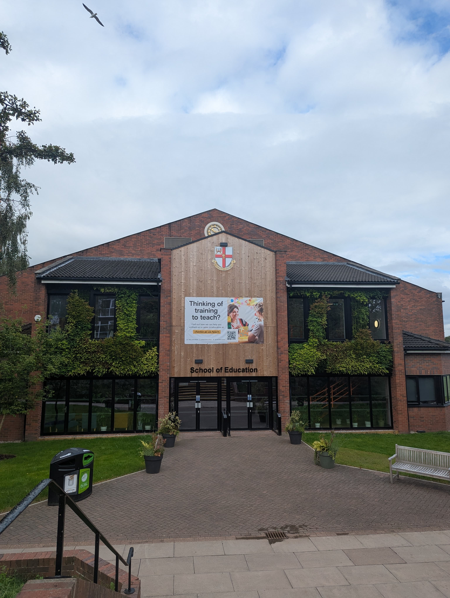

University of Chester
About This Building
The University of Chester's Parkgate Road campus, also known as Exton Park, is a central hub for student life and academic facilities. It houses the Students' Union, various catering outlets, and a library. Fitness enthusiasts can utilize the gym and swimming pool located in the Price Tower building. The campus also offers flexible study options and dedicated support services, including the Wellbeing and Mental Health team, Careers team, and Disability support. Furthermore, the campus provides access to study abroad programs and work-based learning opportunities. The location is also praised for its proximity to the city center and vibrant student-friendly area, with green spaces and gardens adding to the campus atmosphere.